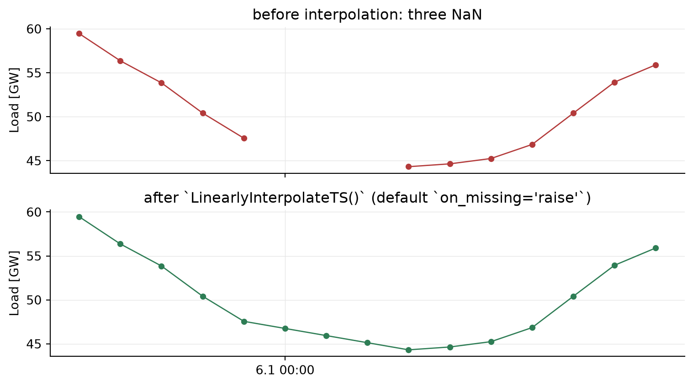

import numpy as np
import pandas as pd
from pathlib import Path
shared = Path("_cache/shared")
y = pd.read_parquet(shared / "load_de_2024.parquet")["load"]
print(f"{len(y):,} hours loaded, {int(y.isna().sum())} NaN.")8,783 hours loaded, 0 NaN.You understand why a safety-critical library by default raises an exception on missing values instead of silently interpolating, and you can correctly apply the three modes raise, ffill_bfill, passthrough of the class LinearlyInterpolateTS.
In safety-critical pipelines the annotation strategy from Chapter 3 (mark_outliers + get_missing_weights + WeightFunction) is the preferred one, because it does not replace gaps with invented values — broken rows are consistently excluded from the loss with weight 0. The linear interpolation shown here remains relevant for three situations: (1) migration from legacy notebooks, (2) as a follow-up step after a deliberately non-imputing imputer, and (3) when the downstream processing demands a NaN-free series without an explicit weight series.
Real sensor data contain gaps. A weather station fails for an hour, an electricity meter is rebooted, a data export drops an empty field. In a pure research notebook this is harmless. In a high-risk application under Annex III of the AI Act — such as the electric load forecast that a transmission system operator uses for dispatch — an unnoticed gap is dangerous. It produces a forecast that is returned with the same apparent confidence as a forecast without a gap; the auditor will never notice afterwards.
Code rule CR-3 (fail-safe processing) therefore requires: invalid inputs explicitly raise an exception instead of being silently imputed. The AI Act underpins this discipline in Art. 10(3) (representativeness, error-freedom, completeness) and Art. 15 (accuracy, robustness, cybersecurity).
pandas, scikit-learn, skforecast, Darts, statsmodels — most tools in the Python ecosystem follow the “silently keep computing” pattern. spotforecast2-safe inverts this default.
LinearlyInterpolateTSSince the major version with the contract switch on_missing, LinearlyInterpolateTS makes the treatment of remaining NaN values explicit. The class interpolates inside the series linearly (limit_area="inside"), so middle gaps are cleanly closed, while endpoint gaps remain and are handled further according to the mode:
| Mode | Behaviour | Who uses this? |
|---|---|---|
"raise" (default) |
Raises ValueError with a preview of the first gaps as soon as any NaN values remain after interpolation. |
Safety-critical pipeline; declares CR-3 actively. |
"ffill_bfill" |
Fills the remaining endpoint gaps by forward/backward fill. | Migration from legacy notebooks; internally also part of the forecaster’s training contract. |
"passthrough" |
Passes NaN through unchanged; the next step takes responsibility. | When a downstream imputer (e.g. WeightedAverageImputation) handles the gaps deliberately. |
raiseimport numpy as np
import pandas as pd
from pathlib import Path
shared = Path("_cache/shared")
y = pd.read_parquet(shared / "load_de_2024.parquet")["load"]
print(f"{len(y):,} hours loaded, {int(y.isna().sum())} NaN.")8,783 hours loaded, 0 NaN.We construct an artificial gap in the middle of the series to see the mechanism at work:
y_with_gap = y.copy()
y_with_gap.iloc[120:123] = np.nan # three NaNs in a row
print(f"Artificial NaNs: {int(y_with_gap.isna().sum())}")
print("Example:")
print(y_with_gap.iloc[118:126].to_string())Artificial NaNs: 3
Example:
Time (UTC)
2024-01-05 22:00:00+00:00 50415.8475
2024-01-05 23:00:00+00:00 47558.1450
2024-01-06 00:00:00+00:00 NaN
2024-01-06 01:00:00+00:00 NaN
2024-01-06 02:00:00+00:00 NaN
2024-01-06 03:00:00+00:00 44314.0025
2024-01-06 04:00:00+00:00 44637.6075
2024-01-06 05:00:00+00:00 45244.7525from spotforecast2_safe import LinearlyInterpolateTS
# `on_missing` is not specified -> default 'raise'
y_clean = LinearlyInterpolateTS().fit_transform(y_with_gap)
print(f"NaN after interpolation: {int(y_clean.isna().sum())}")
print(y_clean.iloc[118:126].to_string())NaN after interpolation: 0
Time (UTC)
2024-01-05 22:00:00+00:00 50415.847500
2024-01-05 23:00:00+00:00 47558.145000
2024-01-06 00:00:00+00:00 46747.109375
2024-01-06 01:00:00+00:00 45936.073750
2024-01-06 02:00:00+00:00 45125.038125
2024-01-06 03:00:00+00:00 44314.002500
2024-01-06 04:00:00+00:00 44637.607500
2024-01-06 05:00:00+00:00 45244.752500The middle gap was cleanly closed because values on both sides were available. The default mode raise only stops if NaN values remain after the interpolation — typically at the start or end of the series.
y_edge = y.copy()
y_edge.iloc[0:2] = np.nan # the first two hours are missing
try:
LinearlyInterpolateTS(on_missing="raise").fit_transform(y_edge)
except ValueError as exc:
print("Expected fail-safe abort:")
print(str(exc))Expected fail-safe abort:
2 missing value(s) remain after linear interpolation. First gaps: [2024-01-01 00:00:00+00:00, 2024-01-01 01:00:00+00:00]. Pass on_missing='ffill_bfill' to opt into endpoint forward/backward fill or on_missing='passthrough' to return the interpolated series with residual NaN.The error message contains a preview of the first gaps — that is all a dispatcher or auditor needs to locate the gap precisely. Exactly this visibility is what Art. 12 of the AI Act (record-keeping) demands: nothing must fall under the table.
ffill_bfill as a deliberate opt-inIf you want to tolerate endpoint gaps deliberately (e.g. at the start of a migration), you must declare this explicitly:
y_filled = LinearlyInterpolateTS(on_missing="ffill_bfill").fit_transform(y_edge)
print(f"NaN after 'ffill_bfill': {int(y_filled.isna().sum())}")
print("First five hours:", y_filled.iloc[:5].round(2).tolist())NaN after 'ffill_bfill': 0
First five hours: [37123.23, 37123.23, 37123.23, 36753.52, 37051.4]Internally ForecasterRecursiveModel uses exactly this configuration in eight places — not out of carelessness, but to satisfy the training invariant “no NaN in the lag window at training time” even when the caller passes the series without pre-processing. The contract is made visible at the call site; that is the difference from silent imputation.
passthrough: responsibility passed to the callery_pt = LinearlyInterpolateTS(on_missing="passthrough").fit_transform(y_edge)
print(f"NaN after 'passthrough': {int(y_pt.isna().sum())}")NaN after 'passthrough': 2Useful, for example, when a downstream WeightedAverageImputation step fills the gaps deliberately. The WARNING emitted by that imputer is shown so that the caller sees in the audit log that imputation has happened.
import matplotlib.pyplot as plt
import matplotlib.dates as mdates
window = slice(115, 130)
fig, (ax_top, ax_bot) = plt.subplots(2, 1, figsize=(8.0, 4.5), sharex=True)
ax_top.plot(y_with_gap.iloc[window].index, y_with_gap.iloc[window].values / 1000,
"o-", color="#B33A3A", linewidth=1.0, markersize=4)
ax_top.set_ylabel("Load [GW]")
ax_top.set_title("before interpolation: three NaN")
ax_top.grid(True, color="#E5E5E5", linewidth=0.5)
ax_bot.plot(y_clean.iloc[window].index, y_clean.iloc[window].values / 1000,
"o-", color="#2E7D55", linewidth=1.0, markersize=4)
ax_bot.set_ylabel("Load [GW]")
ax_bot.set_title("after `LinearlyInterpolateTS()` (default `on_missing='raise'`)")
ax_bot.grid(True, color="#E5E5E5", linewidth=0.5)
ax_bot.xaxis.set_major_locator(mdates.HourLocator(byhour=[0, 12]))
ax_bot.xaxis.set_major_formatter(mdates.DateFormatter("%-d.%-m %H:%M"))
for ax in (ax_top, ax_bot):
for s in ("top", "right"):
ax.spines[s].set_visible(False)
fig.tight_layout()
plt.show()
LinearlyInterpolateTS treatment. Top: an artificially injected gap (three consecutive NaN values) in January 2024. Bottom: the same series after the default call with on_missing='raise' — the three NaNs are filled in by linear interpolation of the neighbouring values; because no endpoint gaps remain, no error is raised.
The three LinearlyInterpolateTS modes and the annotation pipeline from Chapter 3 are not mutually exclusive — they target different points in the lifecycle of the data. Before mapping the application situations, a direct comparison of the two strategies’ structural properties is worthwhile:
| Property | LinearlyInterpolateTS |
mark_outliers + get_missing_weights (Chapter 3) |
|---|---|---|
| Series length after pre-processing | unchanged | unchanged |
| NaN guarantee after the step | only in ffill_bfill mode / after interpolation |
yes, guaranteed after get_missing_weights |
| Training target contains invented values | yes (line between neighbours) | no (real values; broken values are ffill placeholders with weight 0) |
| Auditability of the action | indirect (raise error message) |
direct (verbose=True lists indices; weights is serialisable) |
| Model bias due to imputation | possible | structurally excluded (weight 0) |
| Recommendation for high-risk applications | only as a migration path or with a downstream imputer | standard strategy |
The following table translates these structural differences into concrete application situations:
| Situation | Recommended strategy |
|---|---|
| Production high-risk pipeline (Annex III) | Annotation (Chapter 3); interpolation only as a downstream special step |
| Middle gaps of individual hours, no systematic outlier search needed | LinearlyInterpolateTS(on_missing="raise") as a CR-3 switch |
Migration from legacy notebooks without a weight_func path |
LinearlyInterpolateTS(on_missing="ffill_bfill") as a bridge |
| Own downstream imputer | LinearlyInterpolateTS(on_missing="passthrough") |
| Audit requires an explicit, picklable weight series | Annotation (Chapter 3); weights are part of the model artefact |
If in doubt, start with the annotation from Chapter 3 and only fall back to LinearlyInterpolateTS when there is a concrete argument against the weight series.
We take the clean series as the starting point for all the following steps:
y_clean.to_frame("load").to_parquet(shared / "load_de_2024_clean.parquet")
print("Cleaned series persisted.")Cleaned series persisted.raise, ffill_bfill, passthrough on a series with both a middle and an endpoint gap, what the result looks like in each case. Which mode is directly compatible with Art. 10 of the AI Act?pandas.Series.interpolate() directly with LinearlyInterpolateTS(on_missing='raise'). On an example with gaps at the edge: what happens in each variant? Which default is more suitable for a safety-critical pipeline?LinearlyInterpolateTS() (without an explicit argument) preserves the default on_missing='raise'. Argue why this property must be tested as a contract — and not just stated in the documentation.